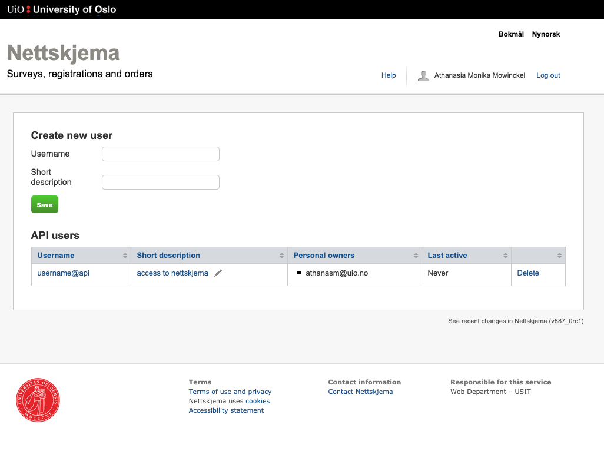

To set up a connection to the Nettskjema API, you need to create an api-user, and a token associated with this user. The nettskjema api-user is different from your standard user that has access to nettskjema. This is a specific user that may access nettskjema through the API.
Use the nettskjema_user_create function to be routed to the portal to set this up.
Create an api user, I recommend using your uio user name or an UiO user group. 
Click on the created username to access the token generation. 
Select which permissions the token should be allowed to have, and save to create the token. 
Copy the token and return to RStudio (this example token has been deleted). 
In R, you can now add this token to your .Renviron file.
You can do this in one of two ways, either open the file with nettskjema_renviron_edit(),
or add it directly with:
This will add the token to the environment variable NETTSKJEMA_API_TOKEN. If you want to give the token another name, or you have several tokens and need to store them separately, you can do so:
This function will add the token so you can authenticate your self to nettskjema, and also make sure the .Renviron file is locked so no other user of your computer may access it. Fot it to take effect, you need your R session to restart. You may do so in RStudio by going to Session -> Restart R session, og by pressing cmd/ctrl + shift + F10 on the keyboard.
This token is important to keep safe. If you believe the token has been compromised in any way, delete it in the API user-portal and create a new one.